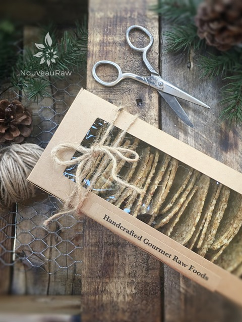
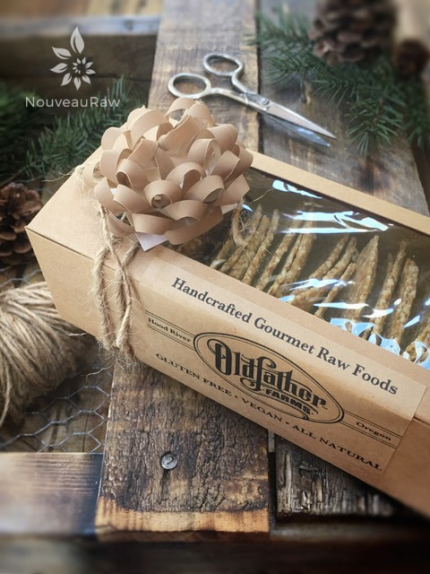
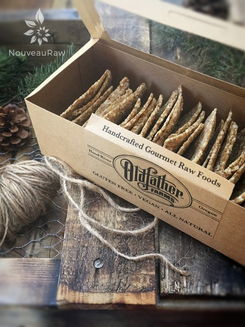

Almond Thin Crackers
Almond Thin Crackers

~ raw, vegan, gluten-free ~
Almond Thins are the perfect guilt-free alternative made with simple, whole-food ingredients. As always, I take the time to activate the almonds, so they can release all of their nutrients, as well as deactivate some of the phytic acid and enzyme inhibitors.
Also made with fresh ground flax seeds which are required so the body can absorb all of their health-giving nutrients. They’re free of gluten, grain, rice, and GMOs… instead, they are packed with a satisfying crunch, tasty simple flavor with the added bonus of fiber and protein.
I love for my crackers to pack a punch in the flavor department, but sometimes I want a cracker that is just a vehicle for other flavorful spreads or dips. I liken it to a saltine cracker.
It doesn’t taste like one but saltines are a plain cracker that doesn’t lend much flavor and pairs beautifully with any topping. This recipe does just that.
The binder in this recipe is the ground flax. Once water is added it starts to thicken and almost has an elastic feel to it as you start to spread it around the dehydrator tray. This is normal.
At first, the batter will seem like it is way too wet. Please give it about 15 minutes of rest and relaxation. You will soon find out just how much flax can thicken things up.
The crackers do remind me of Wheat Thins. They may not taste just like them but it has filled my cravings for them. The key is to remember to put some coarse sea salt on top just as they are heading into the dehydrator. I hope you enjoy this recipe and I can’t wait to hear what you think. Have a blessed day, amie sue
Preparation:
- In the food processor, fitted with the “S” blade, grind almonds, salt until fine.
- Add flax seeds and pulse together.
- Add water and extract. Process until well mixed. It will seem very thin at first. Let it rest for 15+ minutes. This will give the flax time to thicken.
- Spread on the teflex dehydrator sheets and sprinkle with coarse finishing salt.
- Dehydrate at 145 degrees for 1 hour and then reduce temperature to 115 degrees (F) for about 8 hrs. Flip after 3-4 hours. At this point, score the crackers into desired shapes and sizes. Continue dehydrating until crisp.
- Stores well for 2 weeks to 1 month in an airtight container.
Culinary Explanations:
- Why do I start the dehydrator at 145 degrees (F)? Click (here) to learn the reason behind this.
- When working with fresh ingredients it is important to taste test as you build a recipe. Learn why (here).
- Don’t own a dehydrator? Learn how to use your oven (here). I do however truly believe that it is a worthwhile investment. Click (here) to learn what I use.

Home made crackers make wonderful gifts for loved ones. Tie some twine around the box, slap a bow on top, say a prayer over them, and send them on their way.


© AmieSue.com